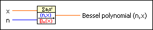
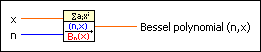
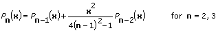
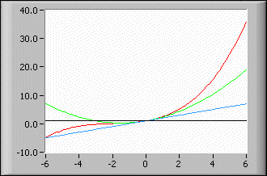

Bessel Polynomial VI
Owning Palette: Orthogonal & Non-orthogonal Polynomials VIs
Requires: Full Development System
Calculates the Bessel Polynomial of order n for any real number x.

 Add to the block diagram Add to the block diagram |
 Find on the palette Find on the palette |
Owning Palette: Orthogonal & Non-orthogonal Polynomials VIs
Requires: Full Development System
Calculates the Bessel Polynomial of order n for any real number x.

| Add to the block diagram |
Find on the palette |
 |
x is any real number. |
 |
n is the nonnegative order (integer) of the Bessel polynomial. |
 |
Bessel polynomial (n,x) is the result of the calculation of the order n Bessel polynomial at the given value of x. |
The following equation shows a recurrence relation that defines the Bessel polynomial Pn(x) of order n.

where P0(x) = 1 and P1(x) = 1 + x.
The following illustration shows the first four Bessel polynomials from bottom to top on the right side. The range of x is from [–6, 6].
